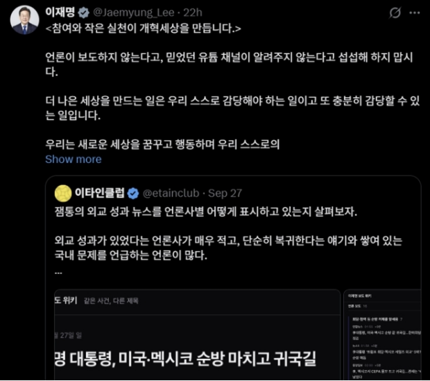
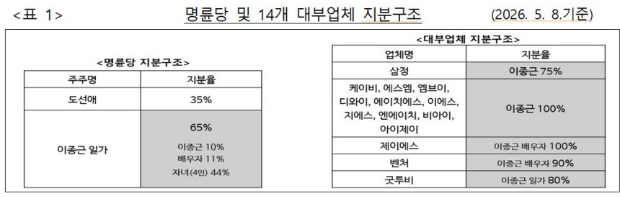
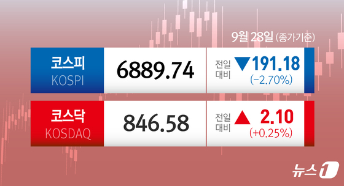

9/29(화) · 기준 2026-09-28 22:00 ~ 2026-09-29 06:00
엑셀 다운로드
"이미지 다운로드"를 누르거나, 이미지를 길게 눌러 저장한 뒤 카톡으로 보내세요.




![[뉴시스] 2027학년도 수능 9월 모의평가 등급별 점수](images/graphics/뉴시스_01.jpg)
![[뉴스1] [그래픽] 2027학년도 수능 9월 모의평가 채점 결과](images/graphics/뉴스1_03.jpg)
![[뉴스1] [오늘의 그래픽] 서울 유주택 신혼부부 10쌍 중 3쌍 '6억 초과'…9년 새 3배](images/graphics/뉴스1_04.jpg)
![[뉴스1] [그래픽] 정당 지지도 추이](images/graphics/뉴스1_05.jpg)
![[뉴스1] [그래픽] 이재명 대통령 국정수행 평가](images/graphics/뉴스1_06.jpg)


![김어준 “李대통령, ‘알고리즘 감옥’ 갇혔다…리트윗하지 마세요”[이슈픽]](images/article_03.png)


![[속보] 은행 9시 30분 문연다…내년 4월부터 ‘영업시간 30분 단축’](images/article_06.png)